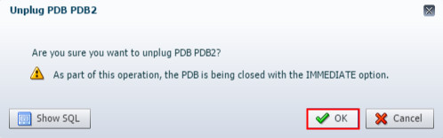
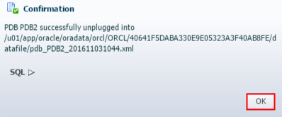
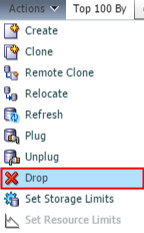
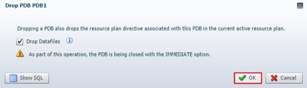

This 10-minute tutorial shows you how to remove pluggable
databases using EM Express.
What Do You Need?
Oracle Database 18c19c
Unplug
a PDB
This is an unnumbered paragraph before a procedure.
In EM Express, ensure that you are in the Containers page
for the ORCL CDB.
In the Top Containers section of the Containers page, click
the PDB that you want to unplug, and then click Unplug. In
this example, you unplug PDB2.
Description of the
illustration a2
The Unplug PDB wizard appears stating that the PDB is being
closed with the Immediate option. Click OK.

Description of the
illustration a3
The PDB is closed and unplugged. The Confirmation box
appears and shows you the path to the metadata XML file
created by the unplug operation. Later, if you decide to plug
the unplugged PDB into a CDB, you must know the location of
the metadata XML file for the PDB. Hence, it is advised to
save the location of the metadata XML file for the PDB. Click
OK.

Description of the
illustration a4
Note: The EM Express removes the PDB from the list of
containers that appears in the Top Containers section on the
Containers page.
Drop a
PDB
In EM Express, ensure that you are in the Containers page
for the ORCL CDB.
In the Top Containers section of the Containers page, click
the PDB that you want to drop, and then choose Drop
from the Actions menu. In this tutorial, you drop PDB1.

Description of the
illustration b2
The Drop PDB wizard appears stating that the drop operation
drops the resource plan directive associated with the PDB in
the current active resource plan, and that the PDB is being
closed with the Immediate option. The datafiles for the PDB
are also dropped. Click OK.

Description of the
illustration b3
The PDB is dropped. The Confirmation box appears and advises
you that the PDB was dropped successfully. Click OK.
Note: EM Express removes the PDB from the list of containers
that appears in the Top Containers section on the Containers
page.
 Remove
PDB Using EM Express
Remove
PDB Using EM Express Before You Begin
Before You Begin Unplug
a PDB
Unplug
a PDB Drop a
PDB
Drop a
PDB